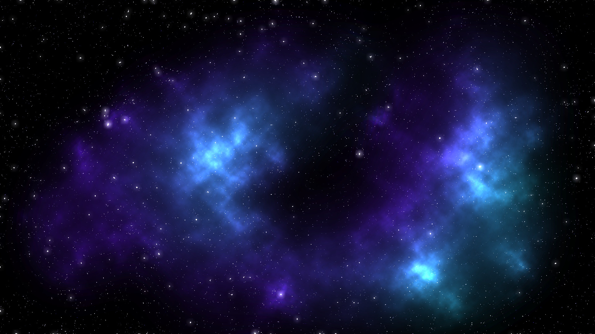
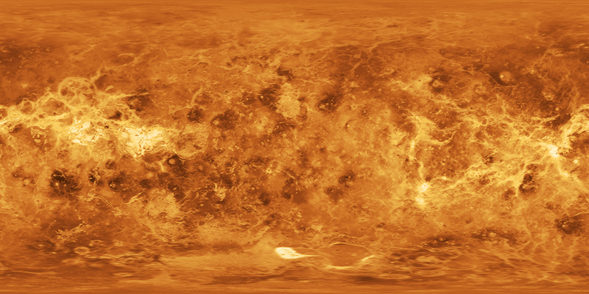
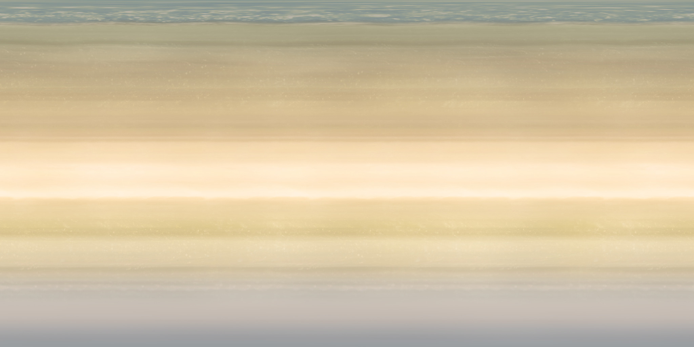
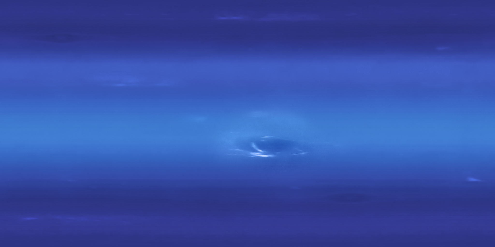
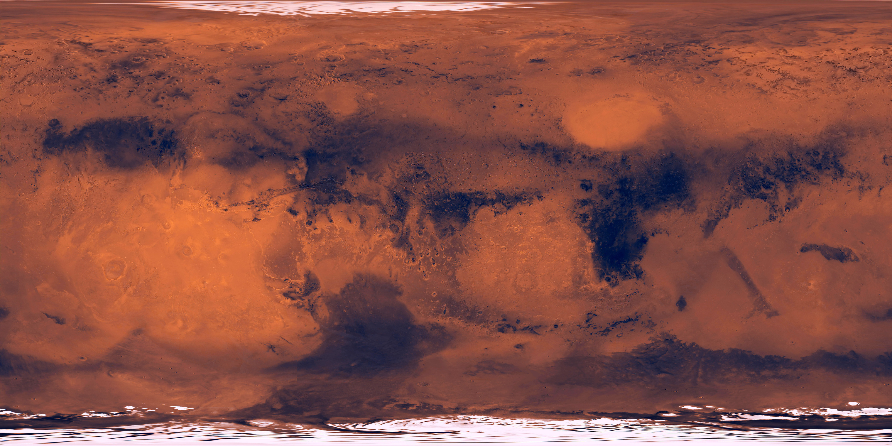

        <a-entity position="-0.5 0.5 -0.5" scale="0.6 1.2 1" text-geometry="value: VAPORWAVE; font: #exoFont; bevelEnabled: true; bevelSize: 0.1; bevelThickness: 0.1; curveSegments: 1; size: 1.5; height: 0.5;" material="color:pink; metalness:0.9; roughness: 0.05; sphericalEnvMap: #chrome;"></a-entity>

        <a-entity position="1 0 0.3" text-geometry="value: Aesthetic; font: #exoItalicFont; style: italic; size: 0.8; weight: bold; height: 0;"
                  material="shader: flat; color: white"></a-entity>
        <a-entity position="1 0 0.3" text-geometry="value: Aesthetic; font: #exoItalicFont; style: italic; size: 0.8; weight: bold; height: 0; bevelEnabled: true; bevelSize: 0.04; bevelThickness: 0.04; curveSegments: 1"
                  material="shader: flat; color: white; transparent: true; opacity: 0.4"></a-entity>
      </a-entity>
<!-- By Ada Rose Edwards @lady_ada_king. -->
<!DOCTYPE html>
<html>
  <head>
      <script src="https://unpkg.com/aframe-event-set-component@3.0.3/dist/aframe-event-set-component.min.js"></script>
    <script src="https://aframe.io/releases/0.5.0/aframe.min.js"></script>
    <script src="https://unpkg.com/aframe-text-geometry-component@0.5.1/dist/aframe-text-geometry-component.min.js"></script>
      <script type="text/javascript">
        AFRAME.registerComponent('cursor-listener', {
          init: function () {
            this.el.addEventListener('click', function (evt) {
              window.location = "./radiation-world.html"
            });
          }
        });
        AFRAME.registerComponent('cursor-listener2', {
          init: function () {
            this.el.addEventListener('click', function (evt) {
                window.location = "./ocean-world.html"
            });
          }
        });
        AFRAME.registerComponent('cursor-listener3', {
          init: function () {
            var lastIndex = -1;
            var COLORS = ['red', 'green', 'blue'];
            this.el.addEventListener('click', function (evt) {
              lastIndex = (lastIndex + 1) % COLORS.length;
              this.setAttribute('material', 'color', COLORS[lastIndex]);
              console.log('I was clicked at: ', evt.detail.intersection.point);
            });
          }
        });
        AFRAME.registerComponent('cursor-listener4', {
          init: function () {
            var lastIndex = -1;
            var COLORS = ['red', 'green', 'blue'];
            this.el.addEventListener('click', function (evt) {
              lastIndex = (lastIndex + 1) % COLORS.length;
              this.setAttribute('material', 'color', COLORS[lastIndex]);
              console.log('I was clicked at: ', evt.detail.intersection.point);
            });
          }
        });
        AFRAME.registerComponent('cursor-listener5', {
          init: function () {
            var lastIndex = -1;
            var COLORS = ['red', 'green', 'blue'];
            this.el.addEventListener('click', function (evt) {
              lastIndex = (lastIndex + 1) % COLORS.length;
              this.setAttribute('material', 'color', COLORS[lastIndex]);
              console.log('I was clicked at: ', evt.detail.intersection.point);
            });
          }
        });
      </script>

    <meta name="description" content="Planet team">
  </head>
  <body>
     <a-scene id="scene">
       <!-- <a-box position="-1 0.5 -3" rotation="0 45 0" color="#4CC3D9"
        event-set__enter="_event: mouseenter; color: #8FF7FF"
        event-set__leave="_event: mouseleave; color: #4CC3D9"></a-box> -->

      <a-assets>
        

        
        
        
        
        

   
        <a-asset-item id="dawningFont" src="https://cdn.glitch.com/c719c986-c0c5-48b8-967c-3cd8b8aa17f3%2FdawningOfANewDayRegular.typeface.json?1490305922844"></a-asset-item>
        <a-asset-item id="exoFont" src="https://cdn.glitch.com/c719c986-c0c5-48b8-967c-3cd8b8aa17f3%2Fexo2Black.typeface.json?1490305922150"></a-asset-item>
        <a-asset-item id="exoItalicFont" src="https://cdn.glitch.com/c719c986-c0c5-48b8-967c-3cd8b8aa17f3%2Fexo2BlackItalic.typeface.json?1490305922725"></a-asset-item>
      </a-assets>

      <a-sphere cursor-listener scale="2 2 2" geometry="primitive: sphere" position="1 5 20" src = "#p4" >
          <a-animation easing="linear" attribute="rotation" dur="10000" to="40 180  0 " repeat="indefinite"></a-animation>
          <a-animation direction="alternate-reverse" repeat="indefinite" attribute="scale" fill="forwards" from="2 2 2" to="2.03 2.03 2.03" dur="1500"></a-animation>
        </a-sphere>

      <a-sphere scale="2 2 2" geometry="primitive: sphere" position="10 5 2" src = "#p1">
        <a-animation easing="linear" attribute="rotation" dur="10000" to="90 100  0 " repeat="indefinite"></a-animation>
        <a-animation direction="alternate-reverse" repeat="indefinite" attribute="scale" fill="forwards" from="2 2 2" to="2.03 2.03 2.03" dur="1500"></a-animation>

      </a-sphere>

      <a-sphere scale="2 2 2" geometry="primitive: sphere" position="-10 5 2" src = "#p2">
        <a-animation easing="linear" attribute="rotation" dur="10000" to="40 80  0 " repeat="indefinite"></a-animation>
        <a-animation direction="alternate-reverse" repeat="indefinite" attribute="scale" fill="forwards" from="2 2 2" to="2.03 2.03 2.03" dur="1500"></a-animation>

        
      </a-sphere>

      <a-sphere cursor-listener2 scale="2 2 2" geometry="primitive: sphere" position="0 5 -1" src = "#p3">
        <a-animation easing="linear" attribute="rotation" dur="10000" to="40 60  0 " repeat="indefinite"></a-animation>
        <a-animation direction="alternate-reverse" repeat="indefinite" attribute="scale" fill="forwards" from="2 2 2" to="2.03 2.03 2.03" dur="1500"></a-animation>
      </a-sphere>

      <a-sphere scale="2 2 2" geometry="primitive: sphere" position="10 5 14" src = "#p5">
        <a-animation easing="linear" attribute="rotation" dur="10000" to="100 130  0 " repeat="indefinite"></a-animation>
        <a-animation direction="alternate-reverse" repeat="indefinite" attribute="scale" fill="forwards" from="2 2 2" to="2.03 2.03 2.03" dur="1500"></a-animation>
      </a-sphere>


      <!-- <a-sphere cursor-listener2 scale="2 2 2" geometry="primitive: sphere" position="0 6 -5" material="color: white; metalness:0.95; roughness: 0.03; sphericalEnvMap: #sky;">
        <a-animation easing="linear" attribute="rotation" dur="10000" to="0 360  0 " repeat="indefinite"></a-animation>
      </a-sphere>
      <a-sphere cursor-listener3 scale="2 2 2" geometry="primitive: sphere" position="0 6 10" material="color: white; metalness:0.95; roughness: 0.03; sphericalEnvMap: #sky;">
        <a-animation easing="linear" attribute="rotation" dur="10000" to="0 360  0 " repeat="indefinite"></a-animation>
      </a-sphere>
      <a-sphere cursor-listener4 scale="2 2 2" geometry="primitive: sphere" position="0 6 -2" material="color: white; metalness:0.95; roughness: 0.03; sphericalEnvMap: #sky;">
        <a-animation easing="linear" attribute="rotation" dur="10000" to="0 360  0 " repeat="indefinite"></a-animation>
      </a-sphere>
      <a-sphere cursor-listener5 scale="2 2 2" geometry="primitive: sphere" position="0 6 3" material="color: white; metalness:0.95; roughness: 0.03; sphericalEnvMap: #sky;">
        <a-animation easing="linear" attribute="rotation" dur="10000" to="0 360  0 " repeat="indefinite"></a-animation>
      </a-sphere> -->

      <a-entity position="-3 1 -6" rotation="5 0 0">
        <!-- <a-entity
          rotation="0 0 5"
          position="0 2 0.2"
          text-geometry="value: We Planet; font: #dawningFont; bevelEnabled: true; bevelSize: 0.05; bevelThickness: 0.05; curveSegments: 12; size: 1; height: 0;"
          material="color:lavenderblush; metalness:1; roughness: 0; sphericalEnvMap: #pink;"
        ></a-entity> -->
        <a-entity light="color: #ccccff; intensity: 0.4; type: ambient;" visible=""></a-entity>
        <a-entity light="color: ffaaff; intensity: 0.5" position="5 5 5"></a-entity>
        <a-entity light="color: white; intensity: 0.5" position="-10 10 50"></a-entity>
        <a-entity light="color: white; intensirt: 0.9 type: ambient;"position="10 5 0"></a-entity>
        <a-sky src="#sky" rotation="0 -90 0"></a-sky>

        <!-- <a-entity id="box" cursor-listener geometry="primitive: box" material="color: blue"></a-entity> -->
        <a-entity camera position="3 1 15" look-controls>
            <!-- <a-entity light="color: #AFA; intensity: 1.5" position="-1 1 0"></a-entity> -->

            <!-- <a-entity 
            cursor="fuse: true; fuseTimeout: 1500"
            animation__click="property: scale; startEvents: click; easing: easeInCubic; dur: 150; from: 0.1 0.1 0.1; to: 1 1 1"
            animation__fusing="property: scale; startEvents: fusing; easing: easeInCubic; dur: 1500; from: 1 1 1; to: 0.1 0.1 0.1"
            animation__mouseleave="property: scale; startEvents: mouseleave; easing: easeInCubic; dur: 500; to: 1 1 1"
            position="0 0 -3"
            geometry="primitive: ring; radiusInner: 0.02; radiusOuter: 0.03"
            material="color: white; shader: flat">
            </a-entity> -->
            <!-- <a-entity
                animation__click="property: scale; startEvents: click; easing: easeInCubic; dur: 150; from: 0.1 0.1 0.1; to: 1 1 1"
                animation__fusing="property: scale; startEvents: fusing; easing: easeInCubic; dur: 1500; from: 1 1 1; to: 0.1 0.1 0.1"
                animation__mouseleave="property: scale; startEvents: mouseleave; easing: easeInCubic; dur: 500; to: 1 1 1"
                cursor="fuse: true;"
                material="color: white; shader: flat"
                position="0 0 -3"
                geometry="primitive: ring">
              </a-entity> -->
              <!-- <a-camera look-controls wasd-controls cursor="maxDistance: 30; fuse: true"> -->
                <!-- progress bar -->
                <a-entity position="0 0 -3" geometry="primitive: ring; radiusOuter: 0.07;radiusInner: 0.05;" material="color: white; shader: flat"cursor="maxDistance: 30; fuse: true"> 

                    <!-- <a-animation begin="click" easing="ease-in" attribute="scale" fill="backwards" from="0.2 0.2 0.2" to="1 1 1" dur="150"></a-animation> -->
                    <!-- <a-animation begin="fuse"  attribute="scale" fill="forwards" from="1 1 1" to="0.2 0.2 0.2" dur="1500"  repeat="indefinite" direction="alternate" ></a-animation> -->

                    <a-animation begin = "fuse" direction="alternate-reverse" repeat="indefinite" attribute="scale" fill="forwards" from="1 1 1" [to="0.2 0.2 0.2" dur="1500"></a-animation>
                </a-entity>

          </a-entity>
  

    </a-scene>
  </body>
</html>
